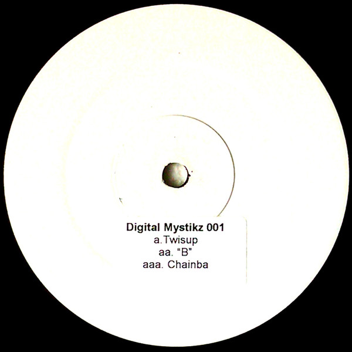

The first DMZ release, and a sign of things to come. The A1, "Twisup" features syncopated, bass heavy kickdrums and the industrial sound palette that would come to define Loefah releases. 'B,' the first track on the flip, is an early example of the genre-definining warping, twisted basslines that Coki would push to the extreme. The final track 'Chainba' is a textbook example early Mala productions: clanging drums with meditative bass.
